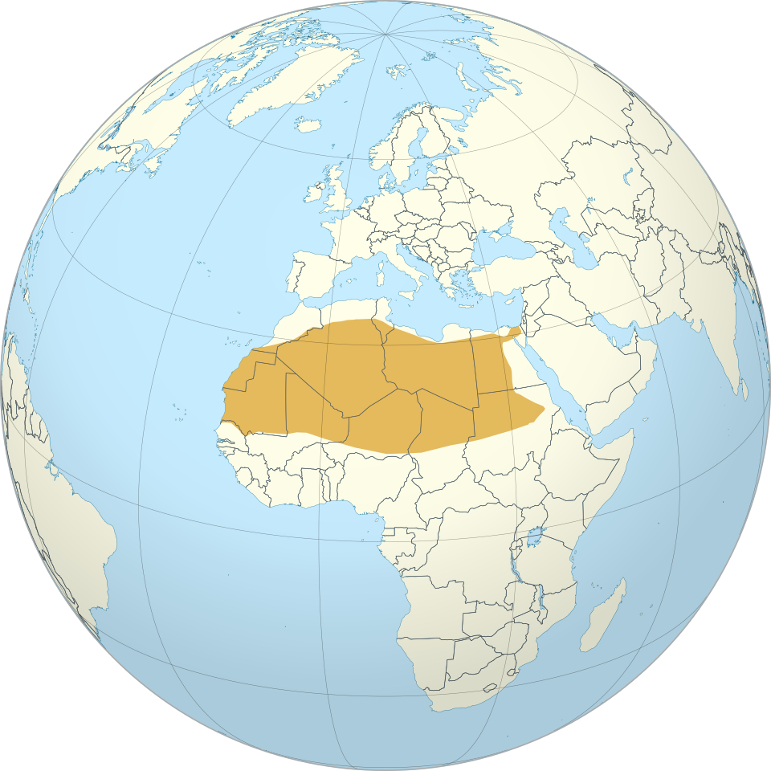

Quick Facts
- Size: 9-16 inches
- Weight: 2-4 pounds
- Lifespan: 10-14 years
- Conservation Status: Least Concern
- Range: Sahara and nearby arid regions of North Africa
Key Nighttime Adaptations
Their massive ears are extremely sensitive to even the faintest sounds. This gives them the edge as a predator hunting in complete darkness. The bottom of their paws are well insulated with dense fur, allowing them to adjust quickly to the dramatic drops in desert temperatures at night and protect them from burns when the sand is still hot.
Diet
They are omnivores and may snack on the occasional insect or feast on rodents and reptile eggs. They also eat fruits and plants where they can find them.
Role in Ecosystem
They serve as invaluable predators, keeping the rodent population under control. They also disperse fruit and plant seeds in their droppings, allowing the plants to take root despite the harsh desert climate.
Fun Fact: They do not need standing water and can survive on the moisture in the food they eat. Some can go their entire lives without drinking anything.


Light Pollution's Effect on Fennec Foxes
They rely on the darkness of night to hunt, forage, and mate. Artificial light can disrupt and confuse them, leading to an imbalance in their circadian rhythm. This could prevent them from both eating and mating.